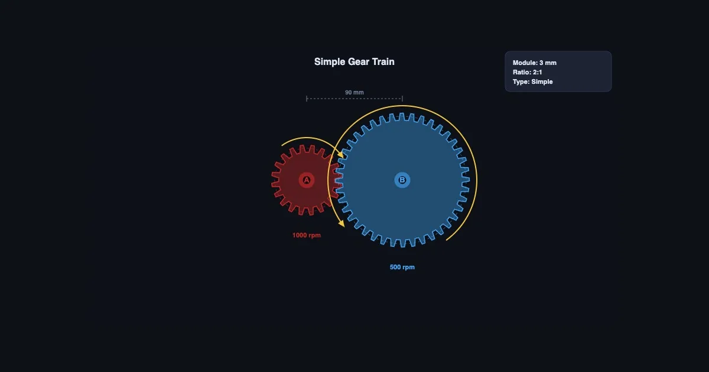
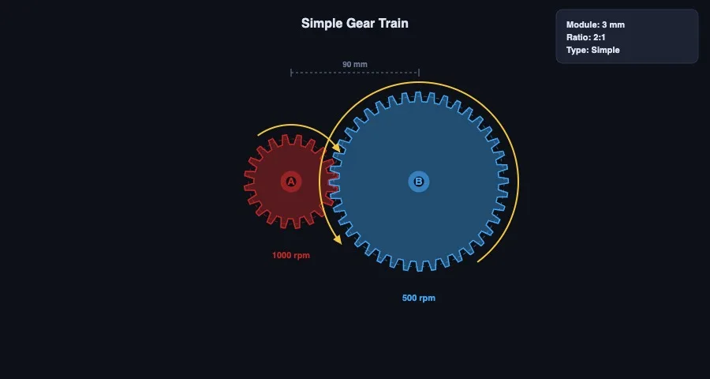

Gear Ratio Calculator — Understanding Gear Trains Through Animation

- Gear ratio = teeth on driven gear ÷ teeth on driver gear (GR = T_driven / T_driver); a 60-tooth driven gear on a 20-tooth driver gives 3:1.
- As the ratio increases the output shaft turns proportionally slower but delivers proportionally more torque — a 3:1 ratio means one-third the speed and three times the torque (ignoring losses).
- Compound trains multiply the stage ratios (e.g. 3:1 × 3:1 = 9:1), idler gears only reverse direction, and worm drives reach up to 300:1 in a single self-locking stage.
Ever tried explaining gear ratios to a room full of restless second-years? You draw a big gear and a small gear on the board, label the teeth, write the ratio formula — and everything seems fine until someone asks "but which way does it spin?" and suddenly four people have four different answers. That question seems simple. The reason it trips people up is that direction in gear trains depends on the configuration, and without seeing the gears actually rotating, it's genuinely hard to visualise.
Animated simulators fix this immediately. Here's how gear trains work — and how to use the Gear Train Calculator to make the concepts stick.
The Core Idea: Teeth, Speed, and Torque
Every gear train is built on one fundamental relationship: if two meshing gears have tooth counts T₁ and T₂, the speed ratio between them is inversely proportional to their tooth counts.
That's: N₂/N₁ = T₁/T₂
A 20-tooth driver spinning at 1000 RPM meshes with a 60-tooth driven gear. The driven gear turns at 1000 × (20/60) = 333 RPM. One third the speed. And because power in equals power out (ignoring friction), torque goes the other way — the driven shaft delivers three times the torque. This is the speed-torque trade-off that makes gearboxes useful.
Direction? Adjacent meshing gears always rotate in opposite directions. Add an idler gear between them and the output direction reverses back to match the input. The idler doesn't change the ratio — just the direction. It's worth demonstrating this in the simulator before telling students the rule, because it's one of those things that's obvious once you've seen it and counterintuitive until you do.
Three Types of Gear Train — Three Different Use Cases
The Gear Train Calculator covers all three main configurations. Each has a distinct engineering application, and the difference between them goes beyond tooth counts.
Simple gear train. Each shaft carries one gear. Simple to analyse — overall ratio is just T_last / T_first, ignoring any intermediate idlers. Suitable for moderate ratios where shaft spacing matters. A typical car gearbox first stage might use a 3:1 simple pair.
Compound gear train. At least one intermediate shaft carries two gears — one meshing with the input stage, one with the output stage. The ratios multiply: overall GR = (T₂/T₁) × (T₄/T₃). This is how large ratios are achieved in a compact package. A two-stage compound train with 4:1 at each stage delivers 16:1 overall, while a simple train would need a 16:1 single mesh — a very large driven gear or very small driver, both mechanically problematic.
Worm gear drive. The worm (a helical screw) meshes with a worm wheel at 90 degrees. Gear ratio = number of teeth on the wheel / number of starts on the worm. A 40-tooth wheel with a single-start worm gives 40:1. Self-locking behaviour (motion can't be driven backward through the worm) makes it useful in hoists, conveyor drives, and steering gear. The efficiency trade-off is real though — worm drives typically run at 40–90% efficiency, considerably lower than spur or helical gear pairs.

Working Through a Compound Train Calculation
Let's walk through a real calculation. Suppose you have a two-stage compound gear train:
- Stage 1: Driver T₁ = 20 teeth, Driven T₂ = 60 teeth → ratio = 3:1
- Stage 2: Driver T₃ = 25 teeth, Driven T₄ = 75 teeth → ratio = 3:1
- Overall ratio = 3 × 3 = 9:1
Input shaft: 900 RPM at 5 Nm. Output shaft (assuming 100% efficiency): 900/9 = 100 RPM at 5 × 9 = 45 Nm.
Now go to the Gear Train Calculator and enter those exact values. Watch the animation. Confirm the output matches the hand calculation. Then change T₂ from 60 to 80 teeth and see how the ratio and output values update instantly. That live feedback is the whole point — it makes the formula feel like a description of something real rather than a procedure to follow.
One classroom activity that works well: give students a target output speed (say 150 RPM from an 1800 RPM motor) and ask them to find a compound gear train that achieves it using standard tooth counts. There's no single right answer, which means they have to actually understand the relationship rather than reverse-engineer a formula from one example.
Belt Drives — When You Don't Want Gear Mesh
Not all mechanical power transmission uses gears. Belt and chain drives achieve similar speed and torque relationships using flexible elements instead of rigid tooth mesh, and there are engineering situations where they're the better choice — vibration isolation, long centre distances, or when the exact ratio doesn't need to be an integer.
The velocity ratio for a belt drive is: VR = D_driven / D_driver (using pulley pitch diameters). Same inverse relationship as gears, but the slip and elastic stretch of the belt mean the actual ratio is never quite exact — acceptable for many applications, not acceptable for precision positioning or synchronised mechanisms.
The Belt & Chain Drive simulator covers open and crossed belt configurations, chain drives, belt length calculation, wrap angle, and the capstan equation for belt tension. Running it alongside the Gear Train Calculator is a good way to show students the trade-offs between the two transmission methods.
Using the Simulator for Teaching and Practice
The Gear Train Calculator has three modes that map neatly onto a typical lesson structure.
Start in Explore mode — change tooth counts, watch the animation, observe direction and speed changes in real time. No calculations yet. Just build the intuition. Five minutes of this before any formula dramatically improves how students process the theory when you introduce it.
Move to Simulate mode for the numerical work. Enter specific gear configurations and read off the speed ratio, torque ratio, and output direction. Work through the class examples here rather than on a static diagram.
Finish with Quiz mode for assessment. Students are given an animated gear train and asked to calculate the output speed, identify the direction, or compare two configurations. It randomises parameters each time, so it works as genuine formative assessment rather than a one-shot exercise.
For a broader context on how these three modes work across all the simulators on the platform, see the article on measuring instrument simulators in engineering classrooms — the progression logic is the same.
Try It Yourself
- Gear Train Calculator — Animate simple, compound, and worm drives. Adjust tooth counts, watch speed and torque update, check rotation direction.
- Belt & Chain Drive — Compare open and crossed belt drives, chain drives, velocity ratio, belt length, and wrap angle with animated pulleys.
- Gear Strength Simulator — Lewis bending stress and AGMA contact stress for spur and helical gears, with safety factor and module selection.
Key Takeaways
- Gear ratio = T_driven / T_driver. Output speed decreases; output torque increases by the same factor (assuming no losses).
- Adjacent meshing gears rotate in opposite directions. An idler reverses the output direction without changing the ratio.
- Compound gear trains multiply the ratios of each stage — making high overall ratios achievable in compact arrangements.
- Worm gears achieve very high ratios (up to 300:1) in a single stage and are self-locking, but run at lower efficiency than spur gear pairs.
- Animated simulation makes rotation direction and speed relationships intuitive in a way that static diagrams and formulas alone don't.
- Explore first, simulate with numbers second, quiz for assessment — the same three-stage approach that works for every simulator on the platform.
Frequently Asked Questions
How do you calculate the gear ratio of a simple gear train?
GR = T_driven / T_driver. A 60-tooth driven gear meshing with a 20-tooth driver gives a 3:1 ratio — the output shaft turns once per three input revolutions, at three times the torque.
What is the difference between a simple gear train and a compound gear train?
In a simple train, each shaft carries one gear. In a compound train, at least one shaft carries two gears. Compound trains multiply stage ratios — a two-stage 4:1 compound gives 16:1 overall in a much smaller package than a single 16:1 simple pair.
How does a worm gear differ from a spur gear train?
A worm gear changes rotation axis by 90° and is self-locking — motion can't be back-driven from the wheel to the worm. Very high ratios (up to 300:1) in one stage, but lower efficiency (40–90%) compared to spur pairs.
Does adding an idler gear change the gear ratio?
No. An idler changes output rotation direction only. The overall ratio is still determined by the driver and final driven gear tooth counts alone.
What happens to torque when you increase the gear ratio?
Torque increases proportionally. A 4:1 ratio gives four times input torque at the output (minus friction losses). Speed and torque are always inversely related through a gear train — if one goes up, the other comes down by the same factor.
Gear trains are one of those topics where seeing is understanding. The formula is simple enough — teeth in, teeth out, speed and torque swap. But until a student watches a 60-tooth gear spin one-third as fast as the 20-tooth one driving it, it stays abstract. Run the simulator. Change the numbers. Watch what happens. That's the lesson.